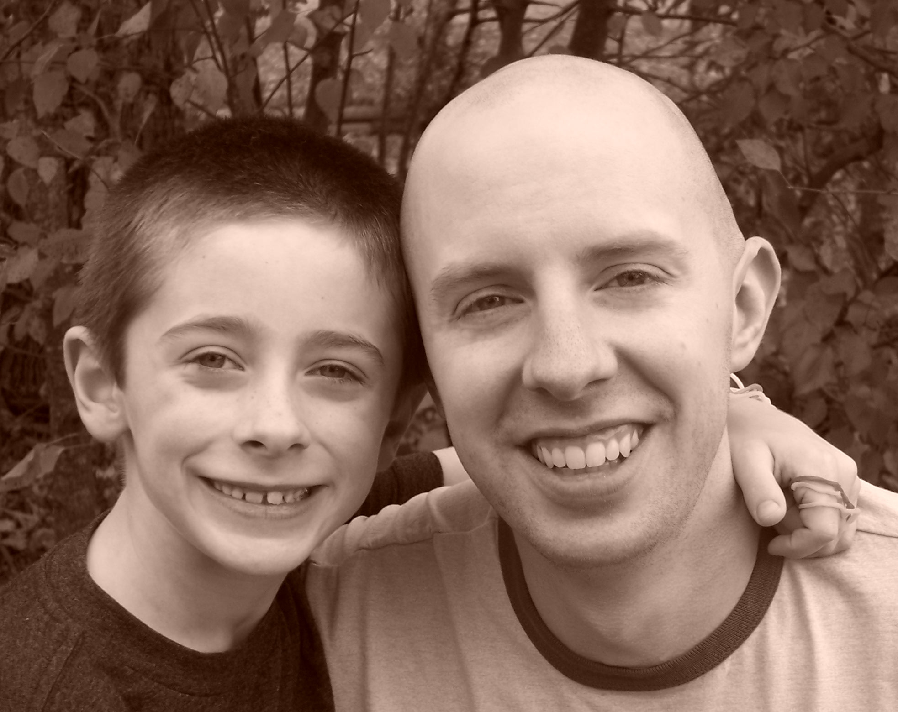

Hello World! This is ITEC 3870
I am a Software Development Major at Georgia Gwinnett College. I plan to graduate in May 2016. I work as an ITEC tutor in the Academic Enhancement Center. I enjoy peer tutoring all ITEC subjects and Discrete Math. My hobbies include building computers and spending time with my son. I enjoy exercising, being outdoors, going on adventures, and staying healthy. I enjoy outdoor activities including biking, hiking, rafting, swimming, and canoeing. I place a lot of emphasis on spending time with my family. I volunteer my time to the Running Club and Coding Club at my son's school. I plan to continue all of these activities in the future.